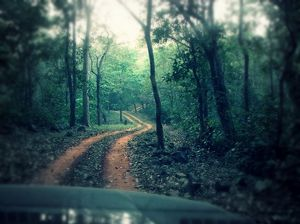

Odisha Temples & Tribes Tours
Eastern Golden Triangle Tours
Olive Ridely Tours
Adventure Tour to Odhisa
Odisha Tours
Best of Odisha Buddhist Tours
Romantic Konark & Puri Tours
Destination Covered : Odisha.
Tour Duration : 08 Nights / 09 Days.

Day 01 :Arrival at Bhubaneswar
Half day sightseeing of tribal museum ( closed on Monday ), Khandagiri & Udaigiri Jain caves ( oldest rock cut caves ). Overnight at Bhubaneswar.
Day 02 :Bhubaneswar - Anugul - Satkosia
Morning after breakfast drive to Satkosia via Anugul. On arrival check in to the tented accommodation. Afternoon short boat cruse to witness the crocodiles basking on river bank. Overnight in the Tent.
Day 03 :In Satkosia
Morning take the boat cruise in Satkosia Gorge. And you can come across plenty of Mugger & Gharial basking along the sand banks. Aftrenoon trekking along the natures trail. Overnight in the Tent.
Day 04 :Satkosia - Bhitarkanika
Morning after breakfast drive to Rajnagar and take the boat cruise to Dangamal-hub of the sanctuary (45 minutes scenic cruise from Khola-entry point). Enjoying the Mangrove forest & crocodiles by boat cruise. Arrival at Dangmal and Check in at the Forest cottage. Overnight at Forest cottage.
Day 05 :In Bhitarkanika
Morning cruise to the Bird Sanctuary & trekking into the Hunting tower of the ancient King of kanika. (Trekk will be of 3/4 hrs) Back to resort. Later visit to Crocodile museum & Interpretation centre. Dinner & Overnight at Forest cottage.
Day 06 :Bhitarkanika - Puri
After morning breakfast cruise back to Khola ( the exit point ) to have last look to natures paradise . Then drive back to Puri enroute visit Lalitgiri. Check in to the hotel. Then relax on the golden beach. Overnight at Puri.
Day 07 :Puri - Konark - Puri
Morning drive to konark to visit the Sun temple ( one of the world famous heritage site, also known as black pagoda ). Enroute visit Ramchandi temple & Chandrabhaga beach. Also visit to the Fishermens village. Return back to Puri. Evening visit of Lord Jagannath Temple (Non Hindus are not allowed) / Relax on the golden beach of Puri. Overnight at Puri.
Day 08 :Puri - Hirapur - Pipli - Dhauli - Bhubaneswar
Morning drive back to Bhubaneswar enroute visit Pipli ( appliqué village ), Hirapur ( hypaethral temple of sixty four yoginis) & Dhauli ( the peace pagoda ). On arrival at Bhubaneswar check in to the hotel. Then visit to famous city temples including Parsurameswar, Mukteswar, Brahmeswar & Linagarj. Overnight at Bhubaneswar.
Day 09 :Departure from Bhubaneswar
Morning transfer from hotel to airport for onwards journey.